User Guide for MongoDB#
Introduction#
Aurreum Data Protection Suite (ADPS) provides the capability for the MongoDB backup and restore. This guide describes how to deploy the ADPS agent and how to use ADPS to back up and restore MongoDB.
Features#
Feature |
Description |
|---|---|
Backup type |
Full backup: Back up the whole database, including enough logs to recover the database. |
Backup source |
Database (single, multiple), instance |
Backup target |
Standard storage pool, de-duplication pool, local storage pool, tape library pool, object storage pool, LAN-Free pool |
Compression |
Fast, none |
Channels |
A positive integer from 1 to 64. Multi-channel is applicable to MongoDB 3.2 and higher versions. |
Backup schedule |
Immediate, one-time, hourly, daily, weekly, monthly |
Restore type |
Timepoint restore: With full backups, this type can only restore to the full backup point. While with log backups, it can restore to a specified point in time. |
Restore location |
Original or new location |
Restore target |
Overwrite the original database, create a new database |
Speed limit |
It is supported to limit the data transport speed or disk read/write speed in different periods. |
Restore to different hosts |
It is supported to restore between hosts with the same version |
Pre/post action |
The pre action is executed after the job starts and before the resource is backed up or restored. The post action is executed after the resource is backed up or restored. |
Reconnection time |
The job continues after the abnormal reset occurs in the network within the set time. The default value is 10 minutes. |
Stop jobs |
It is supported to stop backup and restore jobs. |
Storage pool replication |
MongoDB backup sets support storage pool replication. |
Restore from target pool |
It is supported to restore from target storage pools. |
D2C |
Data can be backed up directly to object storage. |
D2T |
Data can be backed up directly to tape library. |
LAN-Free |
It is supported to back up to and restore from LAN-Free storage pools. |
Add instances manually |
It is supported to add MongoDB database instances manually. |
Modify a job’s backup source and target |
It is supported to modify the settings of a backup job, including backup source and backup target. |
IPv6 |
It is supported to transport and manage data over the IPv6 network. |
Access Key login |
Access Key login is supported. |
Install and Configure Agent#
Verify Compatibility#
ADPS supports the backup and restore for standalone MongoDB instances and replica sets. Before you deploy the agent, check whether your operating systems and database versions are supported.
Database Version |
Database Bits |
Operating System |
CPU Architecture |
OS Bits |
|---|---|---|---|---|
2.4.14 |
64 |
Red Hat 6 |
x86 |
64 |
2.4.14 |
64 |
Ubuntu 12.04 |
x86 |
64 |
2.6.8 |
64 |
Red Hat 6.4 |
x86 |
64 |
2.6.12 |
64 |
Red Hat 6 |
x86 |
64 |
2.4.12 |
64 |
Ubuntu 12.04 |
x86 |
64 |
3.0.12 |
64 |
Red Hat 5 |
x86 |
64 |
3.0.12 |
64 |
Red Hat 6 |
x86 |
64 |
3.0.12 |
64 |
Ubuntu 14.04 |
x86 |
64 |
3.2.6 |
64 |
Red Hat 6.5 |
x86 |
64 |
3.2.6 |
64 |
Ubuntu 14.04 |
x86 |
64 |
3.2.7 |
64 |
Red Hat 7 |
x86 |
64 |
3.2.8 |
64 |
Debian 7.8 |
x86 |
64 |
3.2.9 |
64 |
Windows 2008 R2 |
x86 |
64 |
3.2.11 |
64 |
Debian 9.0 |
x86 |
64 |
3.4.2 |
64 |
Red Hat 6.7 |
x86 |
64 |
3.4.2 |
64 |
Red Hat 7.0 |
x86 |
64 |
3.4.2 |
64 |
Red Hat 7.0 |
x86 |
64 |
3.4.4 |
64 |
Windows 2016 |
x86 |
64 |
3.6 |
64 |
Red Hat 6.5 |
x86 |
64 |
4.0.68 |
64 |
CentOS 7.4 |
x86 |
64 |
4.2.3 |
64 |
CentOS 7.0 |
x86 |
64 |
4.2.17 |
64 |
Windows 2012 R2 |
x86 |
64 |
4.2.17 |
64 |
Windows 2016 |
x86 |
64 |
4.2.17 |
64 |
Red Hat 7.0 |
x86 |
64 |
4.2.18 |
64 |
CentOS 8.0 |
x86 |
64 |
4.2.18 |
64 |
Ubuntu 18.04 |
x86 |
64 |
4.2.18 |
64 |
Ubuntu 18.04 |
arm64 |
64 |
4.4.10 |
64 |
Windows 2016 |
x86 |
64 |
4.4.10 |
64 |
Ubuntu 18.04 |
x86 |
64 |
4.4.11 |
64 |
CentOS 8.0 |
x86 |
64 |
4.4.11 |
64 |
Ubuntu 18.04 |
arm64 |
64 |
5.0.3 |
64 |
Red Hat 8.0 |
x86 |
64 |
5.0.4 |
64 |
Ubuntu 18.04 |
x86 |
64 |
5.0.4 |
64 |
Windows 2016 |
x86 |
64 |
5.0.4 |
64 |
Red Hat 8.0 |
x86 |
64 |
5.0.5 |
64 |
CentOS 7.0 |
x86 |
64 |
5.0.5 |
64 |
Red Hat 8.0 |
x86 |
64 |
Download Agent Package#
Open a browser and log in to the ADPS console as an admin. Click Resource -> Install Agent icon. You can select the software package according to your needs.
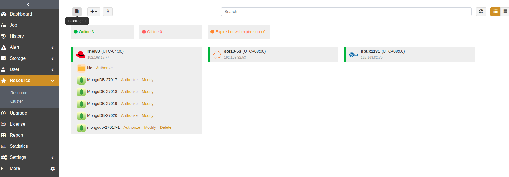
Install and Configure Agent on Windows#
Download Agent Package#
In the Install agent window, select Windows as the system and click Download Windows agent.

Install Agent on Windows#
Copy the package to the target host.
Double-click the package to launch the setup wizard. Click Next.
The package selects the check boxes of the resources installed on the host by default. From the Component list, select MongoDB. Click Next.
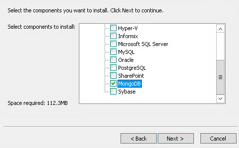
Enter the Backup Server Host, Backup Server Port, and Access Key. Click Next.
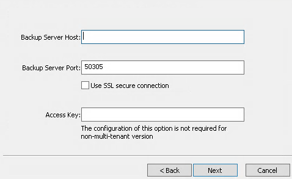
Select a Destination Folder. Click Next to start the installation and wait for it to complete.
Install and Configure Agent on Linux#
In the Install agent window, select Linux as the system and MongoDB as the module. Copy an installation command.
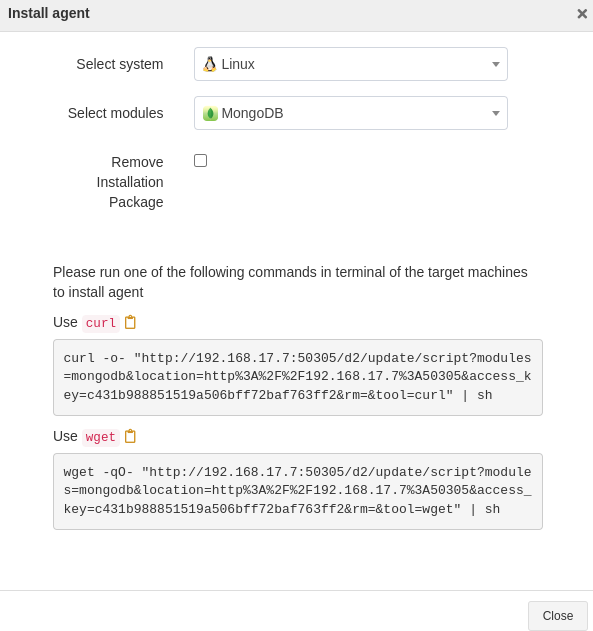
Paste and run the command in the target host to execute the installation.
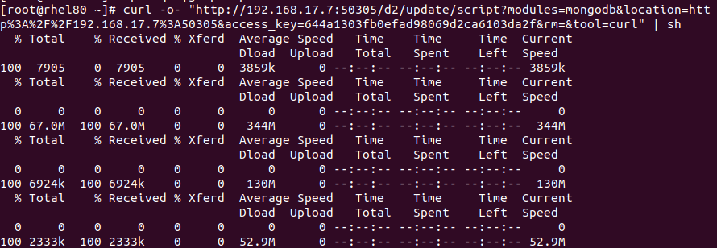
Check Successful Installation#
After the installation, log in to the ADPS console as an admin and open the Resource page. The target host with the agent installed is available on the list.
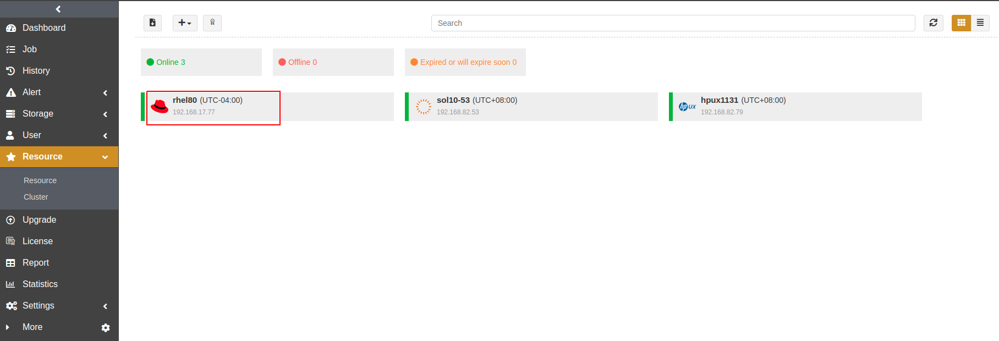
Before You Begin#
Verify Database Status#
Verify the MongoDB status on the host. The database should be in the “running” status.
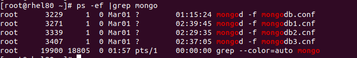
Check Resource#
Log in to the ADPS console as an operator and open the Resource page. The activated and authorized resource is listed on the page with an “Online” state. If the resource is not available, see Activate License and Authorize User.
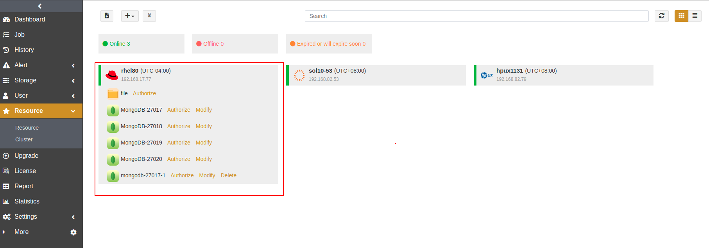
Check Storage Pool#
Log in to the ADPS console as an operator, open the Storage Pool page, and check whether the operator has been assigned any storage pools. If no storage pool is present, contact the admin to create one and assign it to the operator.
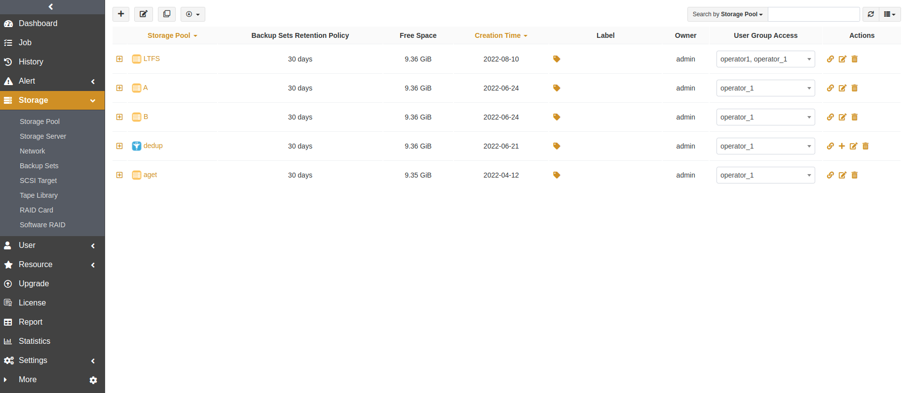
First Time Login#
Before you create the first MongoDB backup and restore, MongoDB login is required. On the Resource page, click Login beside the resource. The Login window appears.
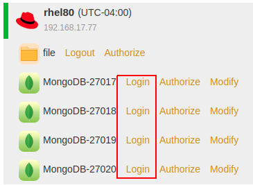
MongoDB supports two authentication methods: Database and Access Key.
Database Authentication: To use the Database Authentication, the MongoDB instance user should have the privileges of backup and restore. If the password is changed, you must re-log in to the instance. Otherwise the jobs will fail.
Access Key Authentication: Use the Access Key of the ADPS user who has been authorized with the resource to log in to MongoDB. With this method, jobs can be performed without the password of the ADPS user, which may have data security risks.
Prerequisites: The MongoDB database can be logged in without a password from the host where it resides.
In the Login window, select an authentication method, enter the User and Password, and click Login.
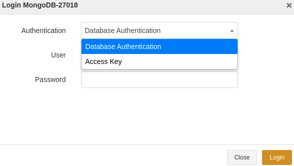
Note:
To use the Access Key Authentication, log in to the ADPS console as an admin and enable the Access Key login instance option in the Settings -> Security.
Add Instance Manually#
Prerequisites#
You have two or more hosts with MongoDB databases.
One of the hosts has been installed with the agent and connected to the backup server. For agent installation, see Install and Configure Agent.
All the MongoDB databases are configured to allow remote connections.
ADPS licenses have been imported.
Add MongoDB Instance#
The steps to add a MongoDB instance are:
On the Resource page, click the “+” icon beside the host. The Add MongoDB Instance window appears.
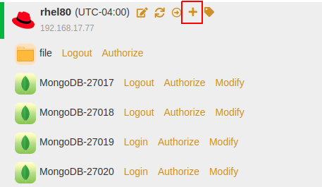
At the Database Connection step, enter the IP and port of the host where the new MongoDB instance resides. Fill in the username and password of the instance user. Click Next.
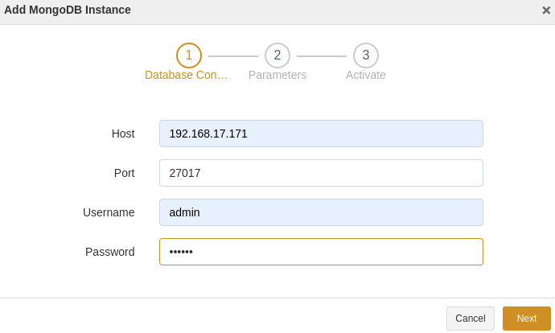
At the Parameters step, set a name for the instance and configure the parameters. Click Next.
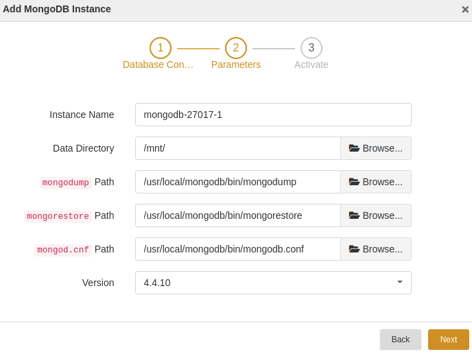
Instance Name: Set a valid name for the new instance.
Data Directory: Select a directory to store data.
mongodump Path: Select a path for mongodump.
mongorestore Path: Select a path for mongorestore.
mongod.cnf Path: Select a path for mongod.cnf.
At the Activate step, enable the license and grant permissions to user groups. Click Submit.
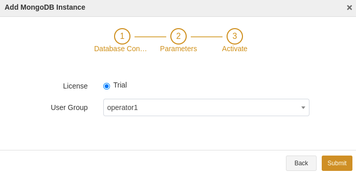
The new MongoDB instance will be listed under the host. You can use it for backup and restore.
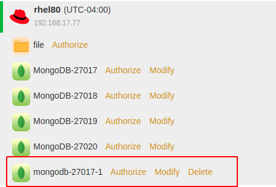
Create Backup Jobs#
This chapter covers how to back up MongoDB databases. ADPS provides the following backup types:
Full backup: This type will back up the whole database, including enough logs to recover the database.
Note: Do not change data during the full backup when the MongoDB version is 3.2.9 or 3.2.10 and the replica set is enabled. Otherwise, the restore of the full backup set will fail. When the above situation occurs, return the mongorestore version to 3.2.8, then the full backup set can be restored.
Log backup: This type will back up the operation log (oplog) of the MongoDB database. Log backup is created based on the full backup.
Note: Replica set should be enabled for log backups.
Logical backup: This type can back up specified databases.
Prerequisites#
An agent has been installed. For details, see Install and Configure Agent.
The license has been activated and the resource has been authorized to users. For details, see Activate License and Authorize User.
Log in to the ADPS console as an operator.
Create Full Backup Jobs#
The steps to create a full backup job are:
Open the Backup page. At the first step, select the host and MongoDB instance. Click Next.
At the Backup Source step, select Full Backup as the backup type and choose a database as the backup source. Click Next.
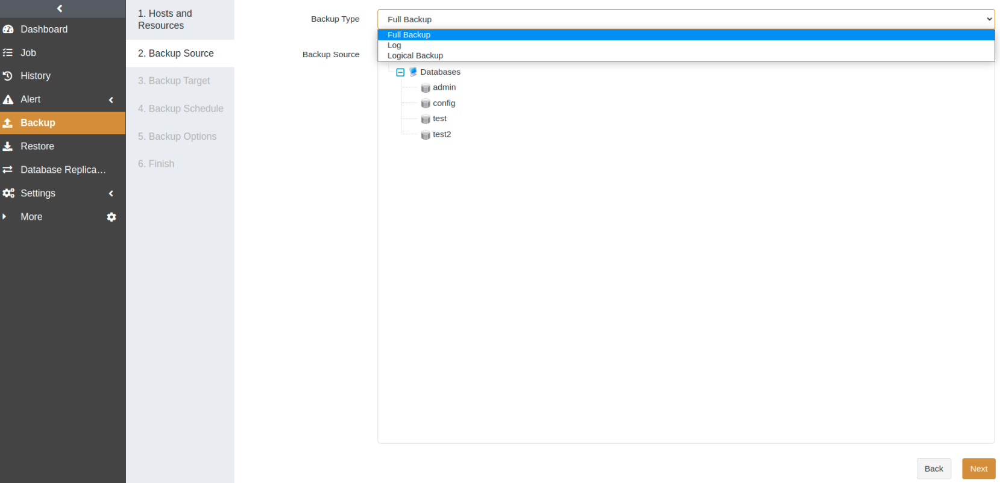
At the Backup Target step, select a storage pool. The backup target can be a standard storage pool, de-duplication storage pool, local storage pool, tape library pool, object storage service pool, and LAN-Free pool. Click Next.
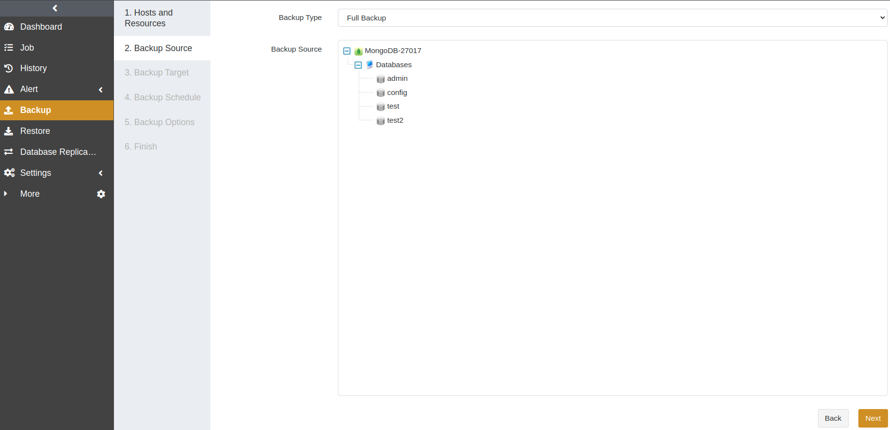
At the Backup Schedule step, set the execution time for the job. We recommend running a full backup on a daily basis. For details, see Backup Schedule Operation. Click Next.
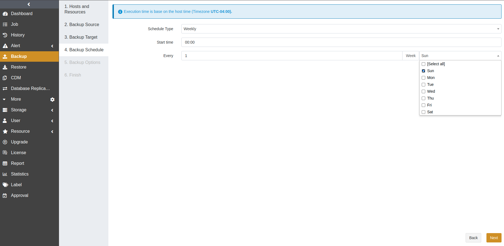
At the Backup Options step, set the common and advanced options. Click Next.
Common options:
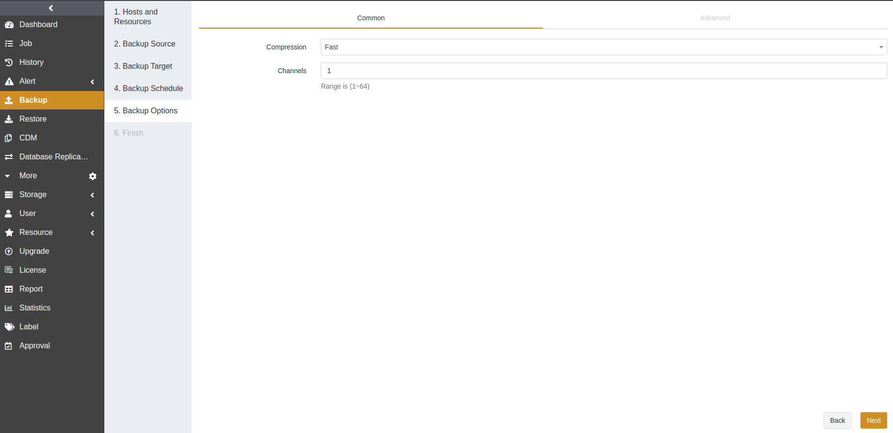
Compression: The Fast option is enabled by default.
Channels: This option can improve the backup efficiency. The default value is 1 and the range is from 1 to 64. For details, see Channel Number Configuration.
Advanced options:
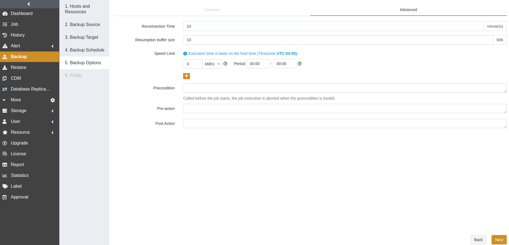
Reconnection time: This option supports 1 to 60 minutes. The job continues after the abnormal reset occurs in the network within the set time.
Resumption buffer size: You can set the resumption buffer speed after the abnormal reset. The unit is MiB.
Speed limit: This option is based on the host’s time. You can specify the start time, the end time, and a speed limit for this time period. If the start time is greater than or equal to the end time, it means the time crosses midnight. The value for the speed limit must be an integer and the unit can be MiB/s or KiB/s. 0 means no speed limit.
Precondition: The precondition is checked before the job starts. The job execution is aborted when the precondition is invalid.
Pre/Post action: The pre action is executed after the job starts and before the resource is backed up or restored. The post action is executed after the resource is backed up or restored.
At the Finish step, set a job name and confirm the job information. Click Submit.
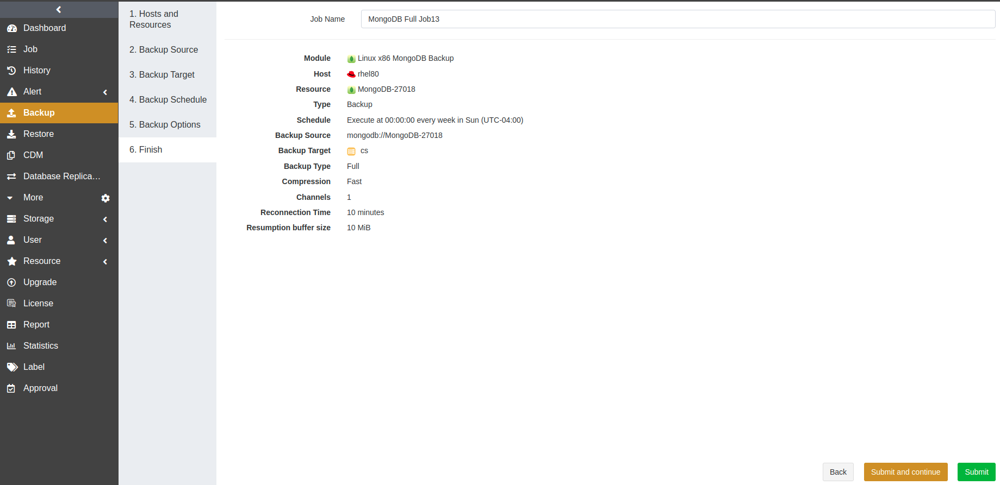
Create Log Backup Jobs#
Based on periodic full backups, you can add frequent log backups to back up only the oplog. The appropriate log backup frequency depends on the balance between your tolerance for the risk of work loss and the log backup number that you can store, manage, and potentially restore. Performing a log backup every 15 to 30 minutes may be enough. But if your business requires minimizing the work-loss risk, consider running log backups more frequently. More frequent log backups can increase the frequency of log truncation, resulting in smaller log files.
The steps to create a log backup job are:
Open the Backup page. At the first step, select the host and MongoDB instance. Click Next.
At the Backup Source step, select Log as the backup type and choose a database as the backup source. Click Next.
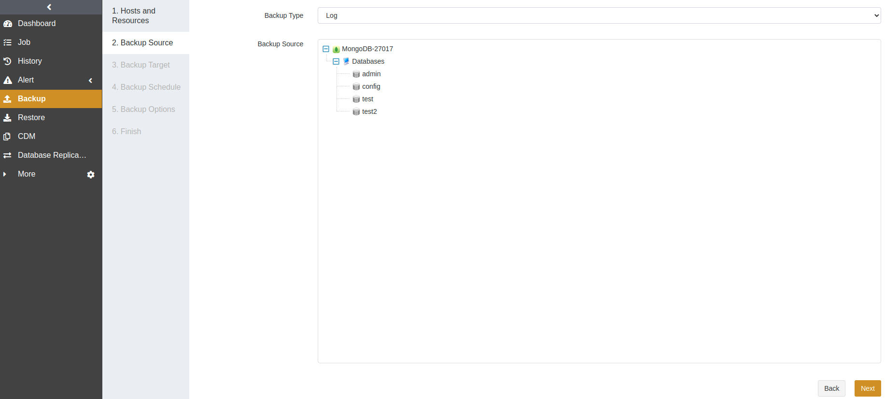
At the Backup Target step, select a storage pool. The backup target can be a standard storage pool, de-duplication storage pool, local storage pool, tape library pool, object storage service pool, and LAN-Free pool. Click Next.
Note: Full backups and log backups are not supported to be stored in different storage pools.
At the Backup Schedule step, set the execution time for the job. For details, see Backup Schedule Operation. Click Next.
At the Backup Options step, set the common and advanced options. Click Next.
Common options:
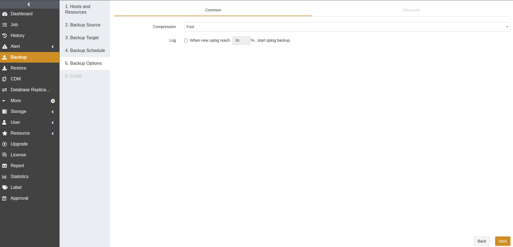
Compression: The Fast option is enabled by default.
Log: This option is only displayed when a periodic schedule is selected at the Backup Schedule step. It is disabled by default. When you select its check box, you can set the threshold for the oplog usage rate. Each time before the job starts to run, the oplog usage rate will be checked. The log backup job will be performed only on the database that reaches the threshold. If the space usage rate does not reach the threshold, ADPS will not perform the job, generate a job history, or send an alert.
Advanced options:
Reconnection time: This option supports 1 to 60 minutes. The job continues after the abnormal reset occurs in the network within the set time.
Resumption buffer size: You can set the resumption buffer speed after the abnormal reset. The unit is MiB.
Speed limit: This option is based on the host’s time. You can specify the start time, the end time, and a speed limit for this time period. If the start time is greater than or equal to the end time, it means the time crosses midnight. The value for the speed limit must be an integer and the unit can be MiB/s or KiB/s. 0 means no speed limit.
Precondition: The precondition is checked before the job starts. The job execution is aborted when the precondition is invalid.
Pre/Post action: The pre action is executed after the job starts and before the resource is backed up or restored. The post action is executed after the resource is backed up or restored.
At the Finish step, set a job name and confirm the job information. Click Submit.
Create Logical Backup Jobs#
You can specify one or more databases for the logical backup.
Open the Backup page. At the first step, select the host and MongoDB instance. Click Next.
At the Backup Source step, select Full Backup as the backup type and choose a database as the backup source. Click Next.
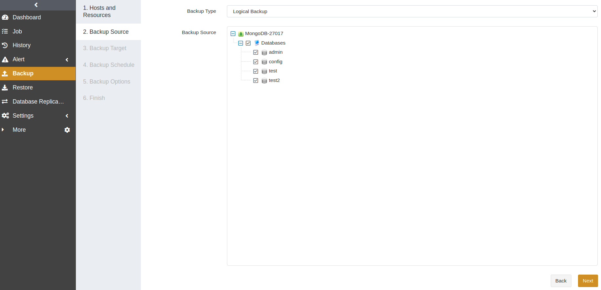
At the Backup Target step, select a storage pool. The backup target can be a standard storage pool, de-duplication storage pool, local storage pool, tape library pool, object storage service pool, and LAN-Free pool. Click Next.
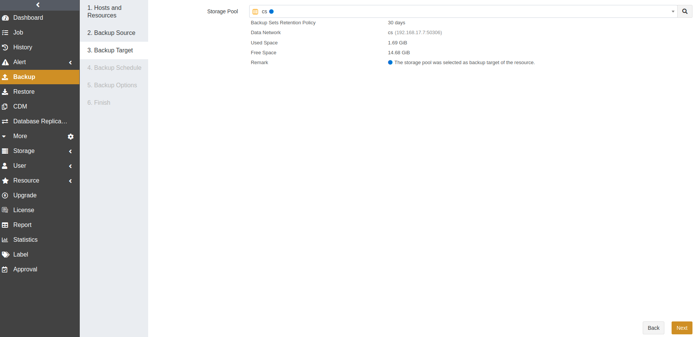
At the Backup Schedule step, set the execution time for the job. We recommend running a logical backup on a daily basis. For details, see Backup Schedule Operation. Click Next.
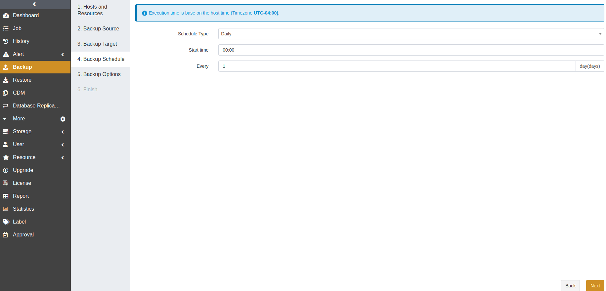
At the Backup Options step, set the common and advanced options. Click Next.
Common options:
Compression: The Fast option is enabled by default.
Channels: This option can improve the backup efficiency. The default value is 1 and the range is from 1 to 64. For details, see Channel Number Configuration.
Advanced options:
Reconnection time: This option supports 1 to 60 minutes. The job continues after the abnormal reset occurs in the network within the set time.
Resumption buffer size: You can set the resumption buffer speed after the abnormal reset. The unit is MiB.
Speed limit: This option is based on the host’s time. You can specify the start time, the end time, and a speed limit for this time period. If the start time is greater than or equal to the end time, it means the time crosses midnight. The value for the speed limit must be an integer and the unit can be MiB/s or KiB/s. 0 means no speed limit.
Precondition: The precondition is checked before the job starts. The job execution is aborted when the precondition is invalid.
Pre/Post action: The pre action is executed after the job starts and before the resource is backed up or restored. The post action is executed after the resource is backed up or restored.
At the Finish step, set a job name and confirm the job information. Click Submit.
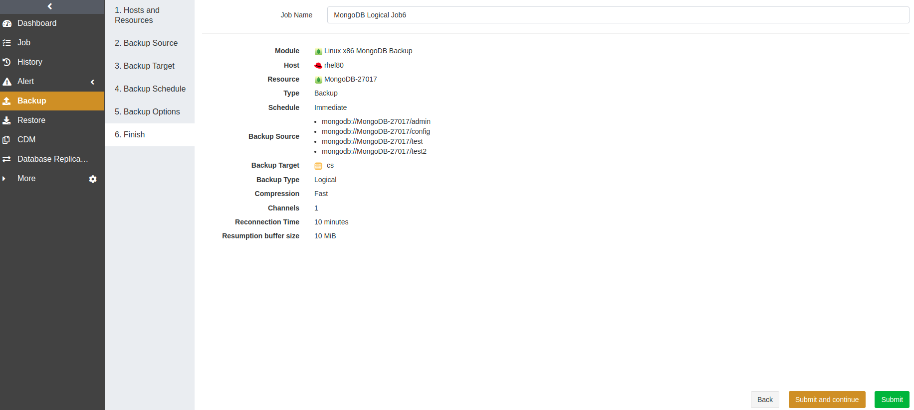
Create Restore Jobs#
This chapter introduces how to restore MongoDB databases. ADPS provides various restore types for different needs, including:
Timepoint restore: With full backups, this type can only restore to the full backup point. While with log backups, it can restore to a specified point in time.
Logical recovery: This type can recover databases from logical backups. You can select the backup point in time under the Database directory on the Backup Sets page.
Prerequisites#
A backup job has been completed.
To restore to another host, install an agent on that host, activate the license, and authorize it to users.
Create Timepoint Restore Jobs#
When a logical error or disaster occurs in a MongoDB database, you can restore the database to a specified point-in-time state using Timepoint Restore.
Note:
To restore to a specified point in time, the MongoDB user role should have anyAction on anyResource.
The timepoint restore of MongoDB 2.6 can only restore to a single MongoDB instance without oplog.
The instance and admin database on MongoDB 2.4 cannot be restored to MongoDB 2.6.
After enabling the replica set, set the bind_ip in the configuration file to 127.0.0.1 or delete bind_ip so that the data can be restored to a new database.
The steps to create a timepoint restore job are:
Open the Restore page. At the first step, select the host and MongoDB instance. Click Next.
At the Backup Sets step, select Timepoint Restore as the restore type. If the selected instance has log backups, you can drag the slider control to specify a point in time for the restore. If the instance has only full backups, the slider control will be disabled. The Backup Sets option shows the corresponding backup set of the point in time. Click Next.
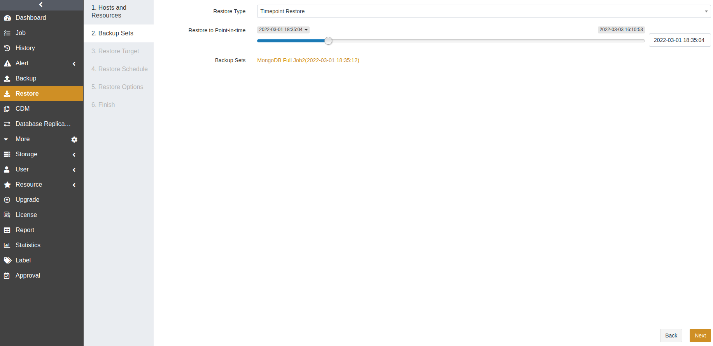
At the Restore Target step, select a resource as the restore target. The target can be the source or a different host. Click Next.
Source host: The source host and MongoDB database are selected by default.
Different host: The MongoDB database can be restored to an instance with the same version or from an older version to a later version on a different host.
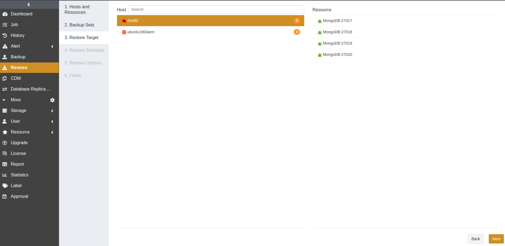
Note: After the restore, the same tables in the target will be overwritten.
At the Restore Schedule step, set the execution time for the job. Only immediate and one-time schedule types are supported. Click Next.
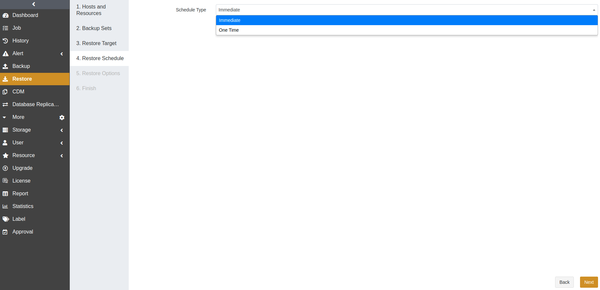
At the Restore Options step, set the common and advanced options. Click Next.
Common options:
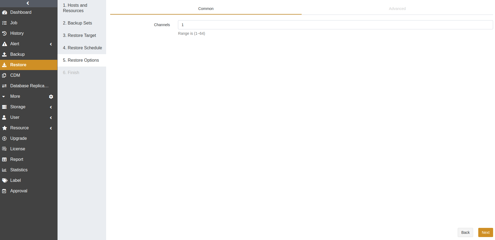
Channels: This option can improve the restore efficiency. The default value is 1 and the range is from 1 to 64. For details, see Channel Number Configuration.
Advanced options:
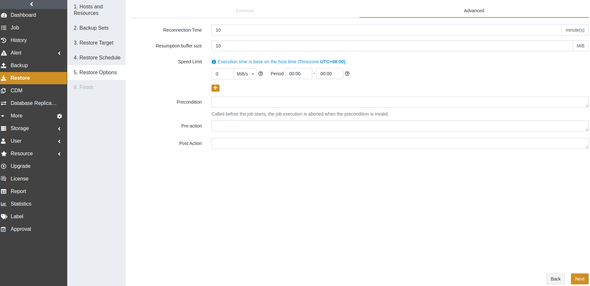
Reconnection time: This option supports 1 to 60 minutes. The job continues after the abnormal reset occurs in the network within the set time.
Resumption buffer size: You can set the resumption buffer speed after the abnormal reset. The unit is MiB.
Speed limit: This option is based on the host’s time. You can specify the start time, the end time, and a speed limit for this time period. If the start time is greater than or equal to the end time, it means the time crosses midnight. The value for the speed limit must be an integer and the unit can be MiB/s or KiB/s. 0 means no speed limit.
Precondition: The precondition is checked before the job starts. The job execution is aborted when the precondition is invalid.
Pre/Post action: The pre action is executed after the job starts and before the resource is backed up or restored. The post action is executed after the resource is backed up or restored.
Confirm the job information and click Submit.
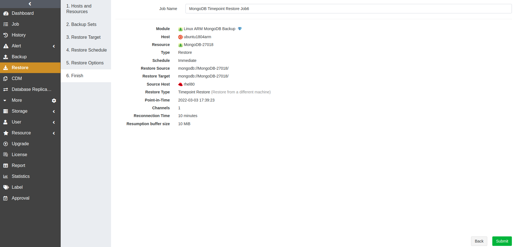
Create Logical Recovery Jobs#
When a logical error or a disaster occurs in the MongoDB databases, you can create a logical recovery job to restore one or more databases to the latest backup state.
The steps to create a logical recovery job are:
Open the Restore page. At the first step, select the host and MongoDB instance. Click Next.
At the Backup Sets step, select Logical Recovery as the restore type. Expand the restore source and select a backup set for the restore job.
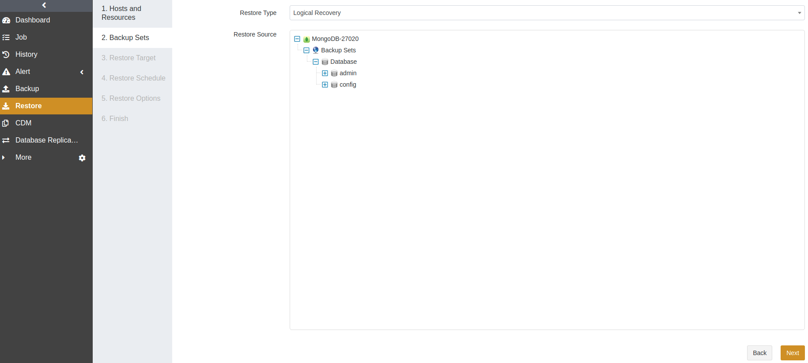
At the Restore Target step, select a resource as the restore target. The target can be the source or a different host. Click Next.
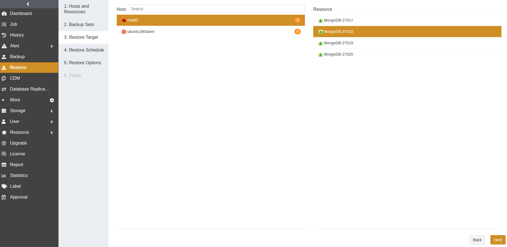
At the Restore Schedule step, set the execution time for the job. Only immediate and one-time schedule types are supported. Click Next.
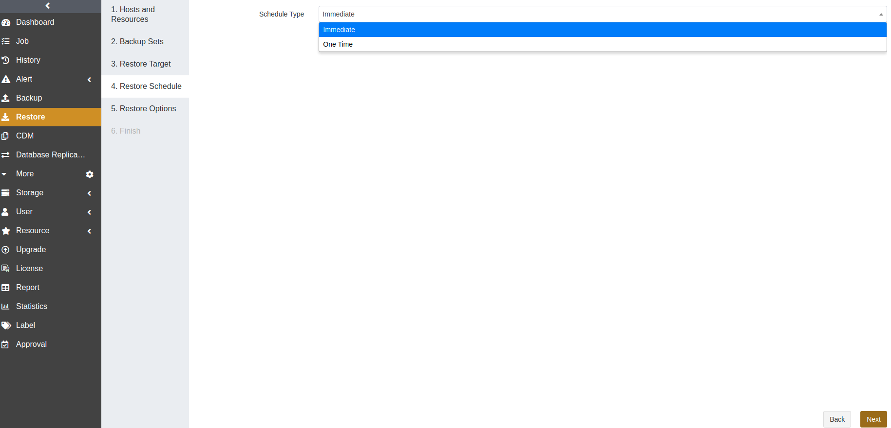
At the Restore Options step, set the common and advanced options. Click Next.
Common options:
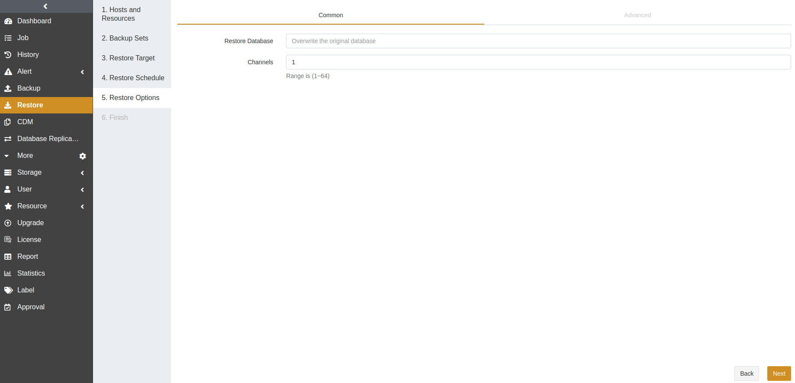
Restore Database: You can leave it blank to overwrite the original database or enter a name to create a new database. The default setting is to overwrite the original database.
Overwrite the original database: The data will be restored to a database with the same name as the original one.
Create a new database: A new database will be automatically created and used to store the backup data.
Note:
When the MongoDB version is 3.2 and you want to restore to a new database, the database on the target with the same name as the source will be replaced by the new one.
Only the logical recovery has the Restore Database option.
Channels: This option can improve the restore efficiency. The default value is 1 and the range is from 1 to 64. For details, see Channel Number Configuration.
Advanced options:
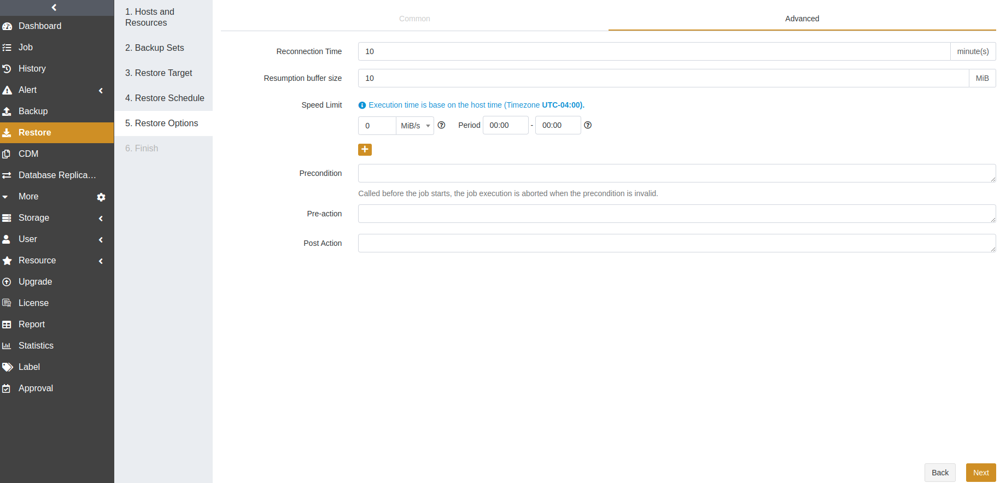
Reconnection time: This option supports 1 to 60 minutes. The job continues after the abnormal reset occurs in the network within the set time.
Resumption buffer size: You can set the resumption buffer speed after the abnormal reset. The unit is MiB.
Speed limit: This option is based on the host’s time. You can specify the start time, the end time, and a speed limit for this time period. If the start time is greater than or equal to the end time, it means the time crosses midnight. The value for the speed limit must be an integer and the unit can be MiB/s or KiB/s. 0 means no speed limit.
Precondition: The precondition is checked before the job starts. The job execution is aborted when the precondition is invalid.
Pre/Post action: The pre action is executed after the job starts and before the resource is backed up or restored. The post action is executed after the resource is backed up or restored.
Confirm the job information and click Submit.
Manage Jobs#
The Job page provides the job information of all agents. You can start, modify, clone, and delete the jobs.
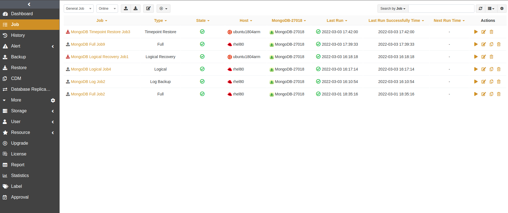
Start: Click
 to start the job immediately.
to start the job immediately.Modify: Click
 to modify the basic job information, backup/restore schedule, and backup/restore options.
to modify the basic job information, backup/restore schedule, and backup/restore options.Clone: Click
 to create multiple similar backup jobs.
to create multiple similar backup jobs.Delete: Click
 to access the confirmation window. Click OK to delete the job.
to access the confirmation window. Click OK to delete the job.
Backup Protection Strategy#
Backup Schedule Operation#
ADPS provides six types of backup schedules. The schedule type selected is only valid for the currently created job.
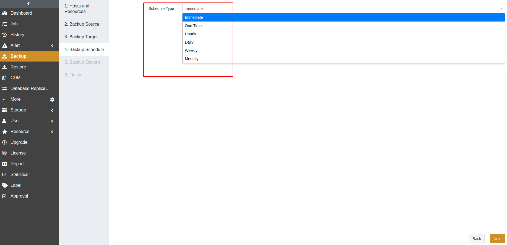
Immediate: The job immediately starts to run after it is submitted.
One Time: After the job is created, it will be in an idle state and start to run when the specified Start time is reached.
Hourly: After the job is created, the first run will be initiated at the specified Start Time. The next run will be executed after a specified number of hours/minutes within the time range according to the setting. If the unit is Hour, then you can set the value from 1 to 24. If you select the Minute as the unit, then you can set the value from 1 to 60.
Daily: After the job is created, the first run will be initiated at the specified Start Time. The next run will be executed after a specified number of days according to the setting. The value is an integer between 1 and 5.
Weekly: After the job is created, the first run will be initiated at the specified Start Time. The next run will be executed after a specified number of weeks according to the setting. You can specify which day of the week to run the job.
Monthly: The job runs on the specified days of some months at the specified time. For example, you can set the job to run on January 1 and June 1 at 20:00. Or you can set it to run on the first Monday of every month at 20:00.
Example: Run the job every two weeks on Friday at 18:00
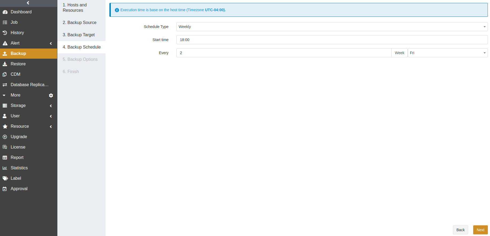
The execution time will be:
If the current time is Friday at 17:00, the execution time will be Friday at 18:00 (the current day).
If the current time is Thursday at 17:00, the execution time will be Friday at 18:00 (the next day).
If the current time is Saturday at 17:00, the execution time will be next Friday at 18:00.
After the first run is completed, the job will start automatically at 18:00 on Friday every two weeks.
Backup Strategy Advice#
ADPS offers three MongoDB backup types: full backup, log backup, and logical backup. It is recommended to formulate the following backup strategy according to different situations such as network bandwidth, business data volume, security requirements, and the amount of data loss that you can tolerate.
When the application traffic is relatively small, run a Full Backup once a day to ensure that you have a recoverable point in time every day.
If the database supports log backup, you can run a Log Backup hourly to ensure that the RPO can reach the second level. For example, you can run a log backup every 2 hours.
Channel Number Configuration#
MongoDB supports up to 64 channels. You can set the number of channels for backup and restore jobs according to your environment. A reasonable number can improve job performance. The number of channels is recommended to be the same as that of CPU cores. The efficiency improvement will not be obvious if the number of channels exceeds that of CPU cores.
Limitations#
Function |
Limitations |
|---|---|
Backup |
· For the MongoDB instance on Windows with non-default ports, its service name must be MongoDBxxx for recognition. |